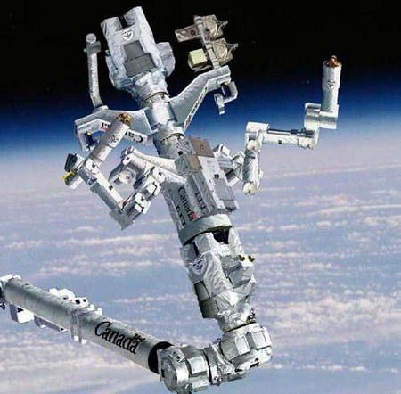
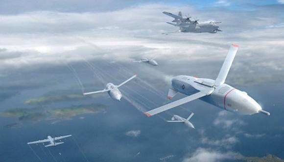
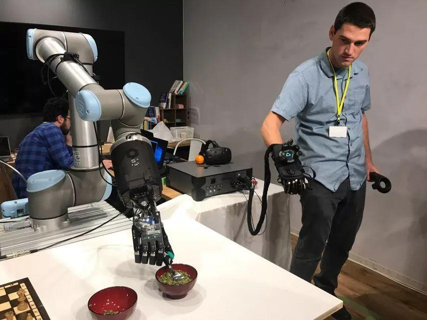

实验室简介
加载中...
实验室研究方向
- 机器人智能控制与决策
- 飞行器集群协同控制与决策
- 故障诊断，容错控制与优化
- 网络攻击下的智能安全控制
- 卫星动力学控制

空间机器人自主控制

飞行器规划控制

机械臂
招生
- 每年招收硕士研究生2人，欢迎自动化、计算机、人工智能、应用数学等相关专业的同学加入，实验室团队氛围好。学习认真、态度踏实、数学好，英语好，动手实践能力强的同学将优先考虑。有意躺平/划水的同学请谨慎联系。
学术任职
- IEEE Transactions on Automatic Control 编委 (Associate Editor)
- IEEE Transactions on Neural Networks and Learning Systems 编委 (Associate Editor)
- IEEE 控制系统协会会议编委会编委
- IEEE ACC、IEEE CDC、IEEE ICRA 等自动化控制与机器人领域国际会议编委